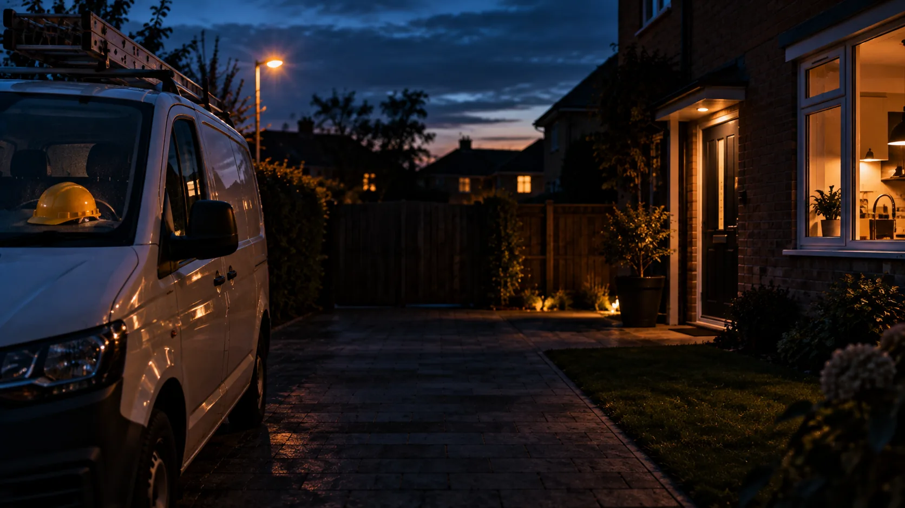

Business automation. Built around you.
Run your business
on autopilot,
not overtime.
Enquiries answered. Quotes chased. Paperwork handled. AI automation for small building firms and trades of 1 to 25 people, built around the way you already work.
30 minutes. No obligation. A written list of what could be automated.

The jobs that eat your week
Less chasing.
More getting on with it.
Start with the work that costs you the most time. We build it around your business, then keep it running.
Keep the conversation going
Reply to enquiries, ask the right questions and follow up while you're on the job.
Give every quote a follow-up
Draft from your pricing, send for your approval and keep the polite nudges going.
Capture it once.
Carry on with your day.
Get receipts, job notes and customer details into the systems that need them.
Automation in action
You're on the job.
It's on the admin.
See how a small, everyday task gets handled. These examples show the kind of work we build around your rules.
Illustrative examples. Every business is set up differently.
Built for your kind of business
From one person and a van
to a team of 25.
We specialise in small building firms and trades. Your pricing, your diary, your way of dealing with customers. Those details are where we start.
See who we work withOther owner-run businesses are welcome too.
A useful first step
Start small.
See it working. Build from there.
Find the time sinks
A free 30 minute call and a written list of what could be automated in your business.
One useful stage at a time
Agree the scope and a fixed price. See the first stage working before the next one starts.
Support as things change
We host, monitor and improve it as your suppliers, systems and business change.
Your time has a cost
What does admin
cost you?
Move the sliders to use your own numbers. Based on 46 working weeks a year. This estimates the cost of your time; the audit identifies what can be automated.
Find out what is
costing you hours.
A conversation about your business. A written list of what could be handed off. A clear place to start.